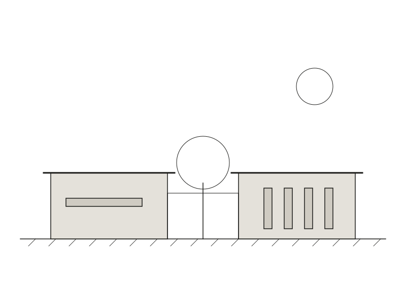
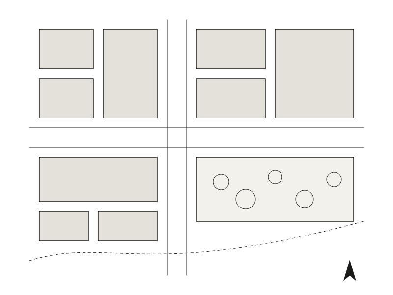
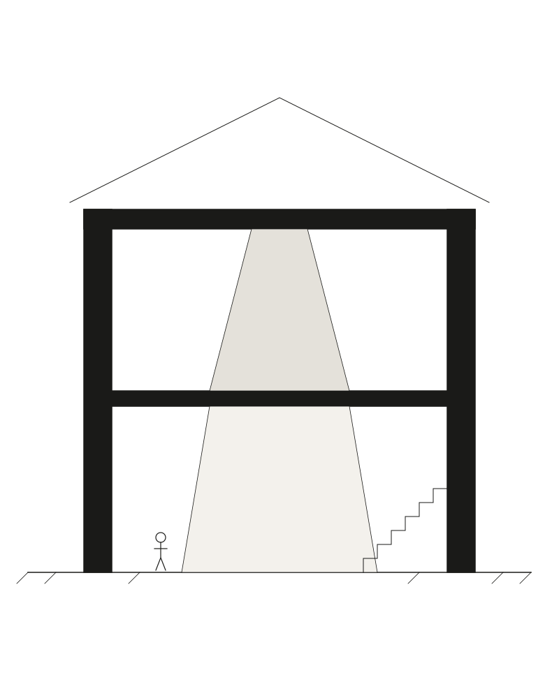
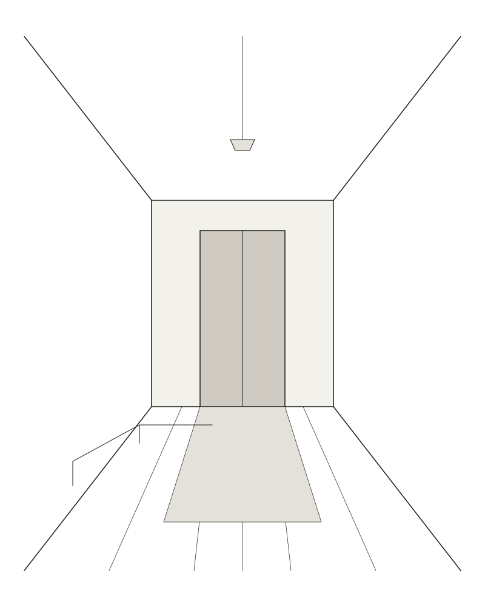

Courtyard House
- Type
- Residential
- Year
- 2025
- Status
- Completed
- Area
- 240 m²
- Location
- City, Country

Overview
A house turned inward, toward light and a single tree.
Two long, low wings frame a planted courtyard, giving every room a view of the garden and a share of morning light while turning a quiet face to the street.
The plan is deliberately simple: living spaces on one side, bedrooms on the other, joined by a glazed gallery that opens fully in summer. Thick masonry walls provide thermal mass, while deep reveals shade the glazing from the high sun.
A restrained palette — lime-washed brick, oiled timber and polished concrete — is carried from the exterior through to the joinery, so the house reads as one continuous material idea.


